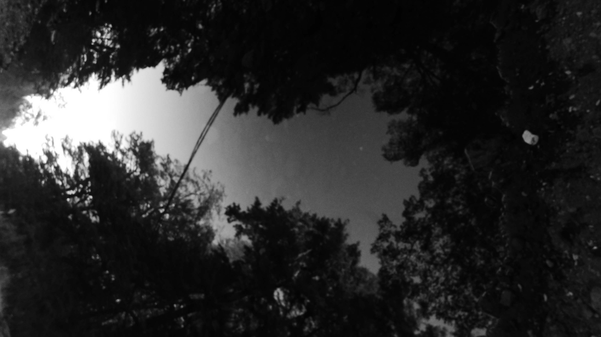

Fantasmas 2
Ricardo Vivanco

No creo en fantasmas, pero pienso en ellos, pienso que existen de otras formas, formas como la luz.
Luz que rebota y viaja de miles de millones de kilómetros lejos de la tierra, luz que existe en toda la existencia, como la sombra de una sombra.
Una luz que rebota y viaja desde cada uno de nosotros al infinito, desde el sol y las estrellas al universo, una luz tenue imperceptible, que viaja eternamente a ese espacio.
Una luz conformada de todos nosotros, de todas las cosas de todo lo que existe, viajando, vibrando tan cerca de la inexistencia que podría decir que no existe.
Una luz que si pudiera verla podría ver de una manera mágica, separando y aumentando su brillo, a seres que ya no existen, podría ver el instante en que una tía me enseñó a hacer pie de limón, su propio nacimiento y su propia muerte.
una luz conformada por el presente de todas nuestras existencias, todo al mismo tiempo, casi como una película montada sobre otra, todo hecho ruido.
Si viera esa luz, sería un mosaico de todas sus risas, vivencias y llantos; su concepción, nacimiento y muerte, todo al mismo tiempo.
Una luz que con cada segundo se iría completando con nuestra luz, segundo a segundo, con nuevos fotones que existen un instante de instantes, desde el interior del sol hasta rebotar al espacio y luego a ese terreno intangible.
Una luz que al final de los tiempos se compondría de todos, vibrando en pequeñas cuerdas desconectadas del todo.
Hasta que la última luz brille, en el último aliento de las estrellas, allí donde el último fulgor emane, viviremos como recuerdos en un caldo que será un murmullo imperceptible
© 2026 Ricardo Vivanco. Todos los derechos reservados. Citas breves con atribución permitidas; para usos más amplios, contáctame.